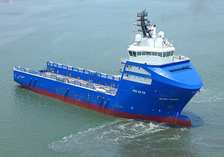

Ship Building
CSL, the first Greenfield and presently the most modern shipbuilding yard in India, has an enviable reputation for building high quality sh..

Ship Repair
CSL started offering ship repair services in 1982 and has undertaken upgrades and repairs for al..
Udupi Cochin Shipyard Limited (UCSL), a wholly owned subsidiary of India’s leading shipyar..
Kochi, May 27, 2024: India’s leading shipyard, Cochin Shipyard Limited, bagged another pre..
Procurement Plan for Next 5 Years..
Startup Program
CSL has launched a startup policy to support startups in maritime sector..
Photo Gallery
Cochin Shipyard was conceived of in the year 1969 when a team surveyed various locations in India before selecting Cochin for the launch of the first Greenfield Shipbuilding Yard in the country.
- 
-

About Cochin Shipyard Limited
12 MONTHS GME COURSE
One of CSL's most rewarding contribution is its Marine Engineering Training Institute (METI), located in the Vigyana Sagar premises at Girinagar, Cochin, Kerala
METI is an institute with ISO 9001:2015 for Quality Management System, ISO 14001:2015 for
Environmental Management System and ISO 45001:2018 for Occupational Health and Safety Mana
Read
More
Shipyard History
Cochin Shipyard was conceived of in the year 1969 when a team surveyed various locations in India before selecting Cochin for the launch of the first Greenfield Shipbuilding Yard in the country.
Read MoreHow We Works
Cochin Shipyard was incorporated in 1972 as a Government of India company, with the first phase of facilities coming online in 1982. The company has Miniratna status. The yard has facilities
Read More
Ship RepairCSL started offering ship repair services in 1982 and has undertaken upgrades and Read More |

Marine EngineeringThe Marine Engineering Training Institute (METI) commenced the Graduate Mechanical Engineers (GME) Course in 1993. This 12 mo Read More |
FacilitiesCSL has always focused on the continuous and sustainable improvisation of the infrastructure, which being a key element in th Read More |

FinancialsAs the biggest shipyard in India, CSL believe not only in the quantity of products and services but also in the value.The per Read More |
Ministry of Ports, Shipping and Waterways
Corporate Identity Number (CIN): L63032KL1972GOI002414
Perumanoor P O, Kochi - 682015, Kerala, India
Phone: 0484-2501200
Fax: 0484-2370897/2383902